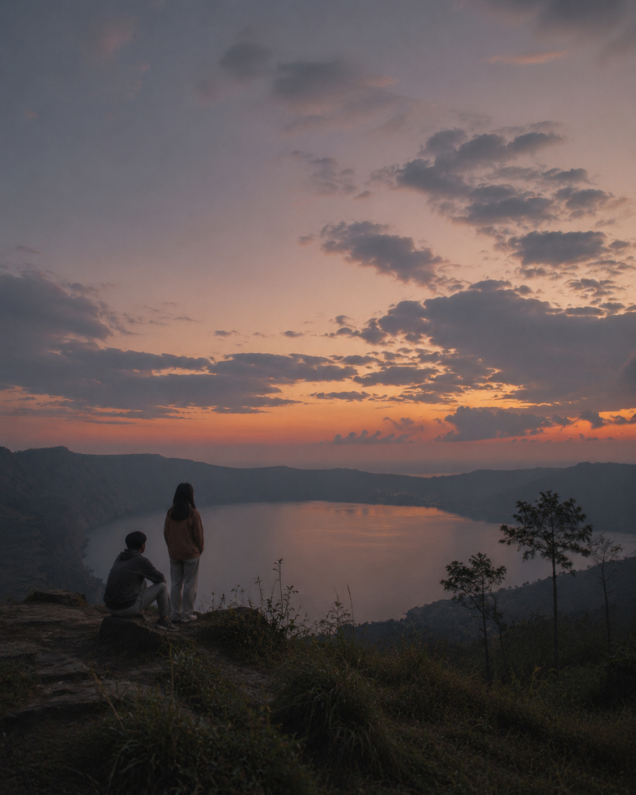
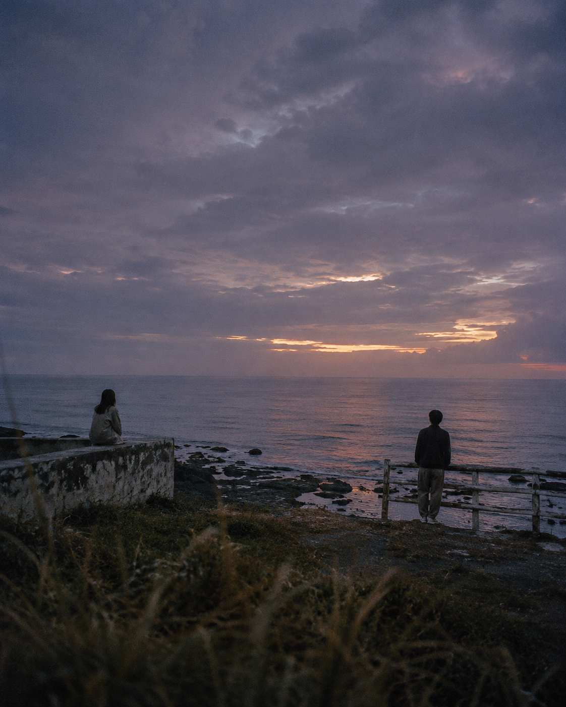
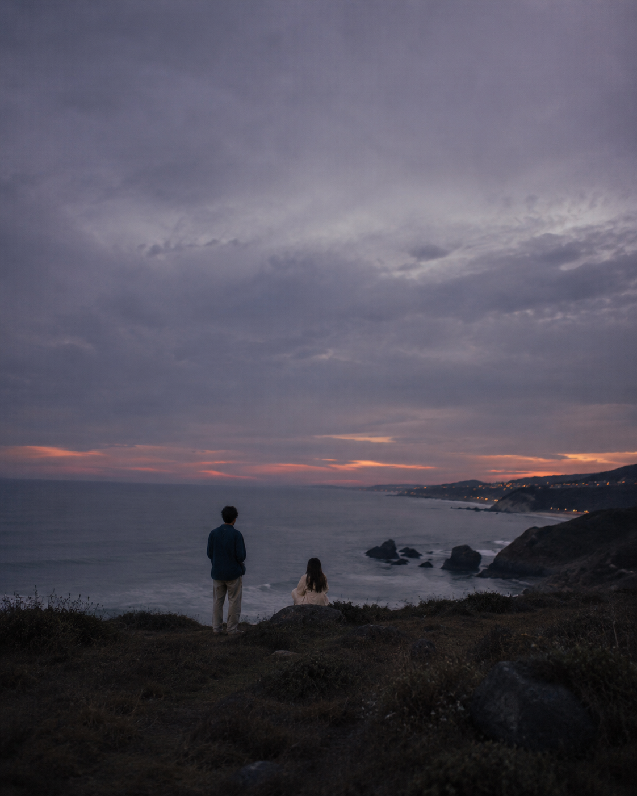
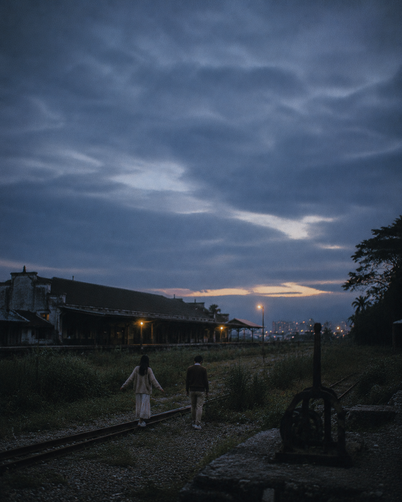

Langitnya pelan pelan gelap. Kepalaku malah makin ramai.
Belum ada kabar dari sore. Aku udah nyusun lima cerita sendiri.

Terus aku inget, cerita di kepalaku bukan bukti.

Jadi aku lihat yang beneran ada di depanku.

Malam ini aku masih utuh. Besok aku tanya pelan pelan.